Java基礎問題
設問 1
「Hello World.」を画面に表示してください。
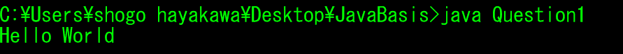
設問 2
if文キーボードで入力した整数nが偶数か奇数かを判定し、その結果を表示してください。
また、表示する際の文言は画像を参照してください。
※メソッド名のあとに下記のように「throws IOException」を追記してください。
これは現時点ではあまり気にせず、おまじないの様な物だと思ってください。
public static void main(String[] args){
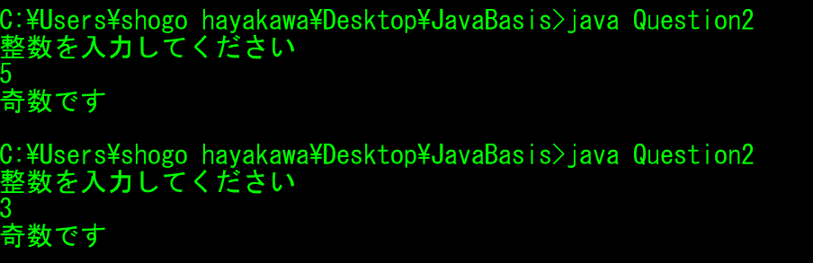
設問 3
for文キーボードで整数nを入力し、
下の画像のように対角線の入った四角形(大きさは n × n)を表示してください。
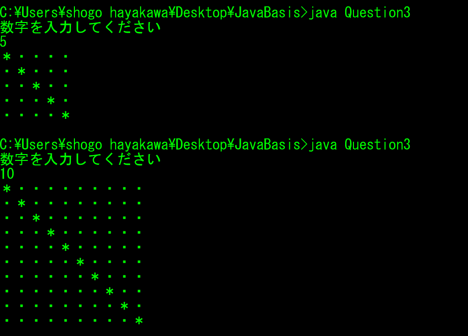
設問 4
try～catch～finally文
キーボードで整数nを入力し、100/nの結果を表示してください。
その後、"終了"を表示してください。
※下記exceptionをcatchした時エラー文を表示してください。
ArithmeticException："0で除算できません"
NumberFormatException："数字以外が入力されました。"
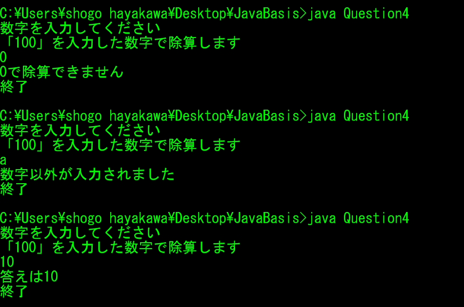
設問 5
switch文
キーボードで0～6を入力し、対応した曜日を表示してください。
例：0→日曜日～6→土曜日
switch文を使用してください。
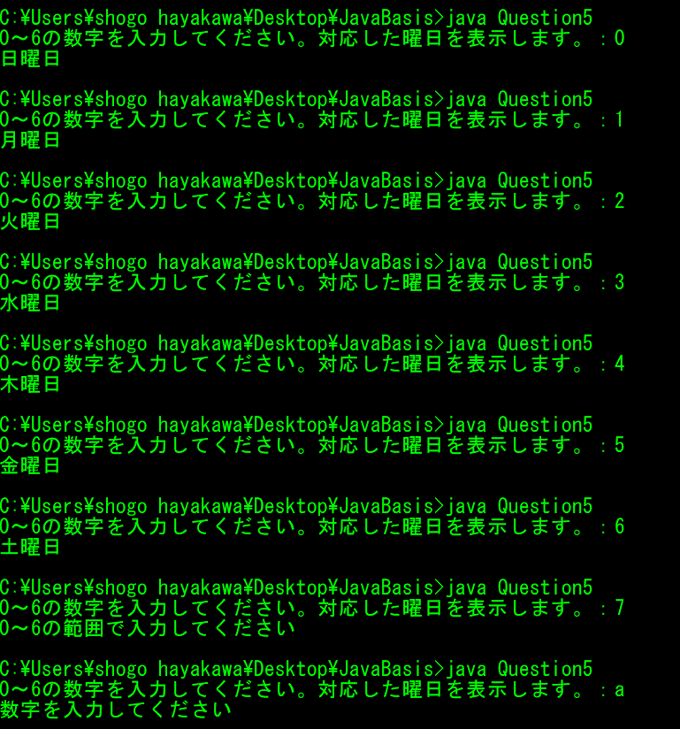
設問 6
配列
文字列を5つ入力し、それらを配列に入れてから再度並べて表示してください。
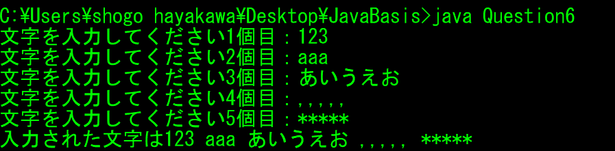
設問 7
ソート
整数を5つ入力してそれらを昇順に並べ替えて、
並び替えの結果と最大値、最小値を表示してください。
※arrays.sortは使用不可
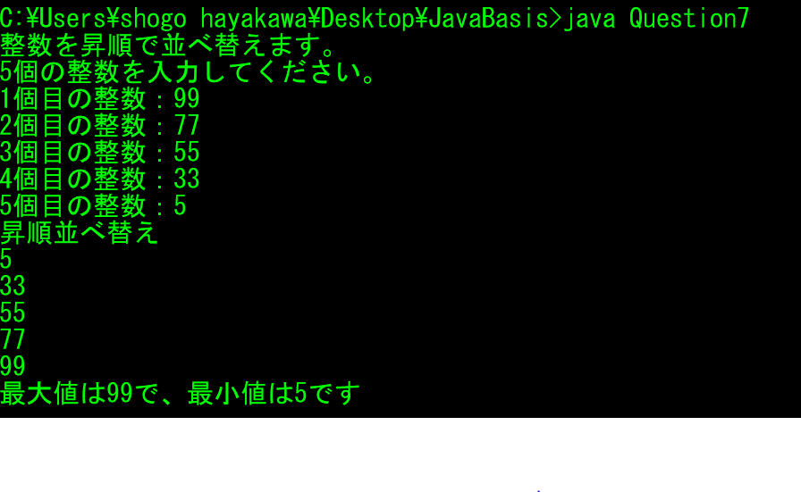
設問 8
メソッド
設問3と同様のキーボードから整数 n を入力し，
以下のような対角線の入った四角形(大きさは n × n)を書いてください。
※ただし main メソッド内は2行以内にしてください
※ヒント：同じクラス内に別メソッドを作成してください
例：
public class Question8 {
public static void main(String[] args) {
........; // 一行目
........; // 二行目
}
}

設問 9
戻り値
キーボードで整数を2つ入力し、入力した数字の積とそれを2で割った数を求めてください。
※入力値を引数とし計算結果を戻り値として返すメソッドとしてそれぞれ作成してください
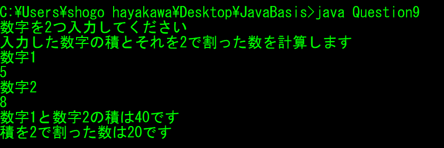
設問 10
コンストラクタ下記のクラスに引数ありのコンストラクタを追加してください。
追加したコンストラクタを利用してインスタンスごとに名前が変えられるようにしてください。
class Person {
private String name;
public Person() {
this.name = "名無し";
}
public void printName(){
System.out.println("私の名前は " + this.name + " です");
}
}
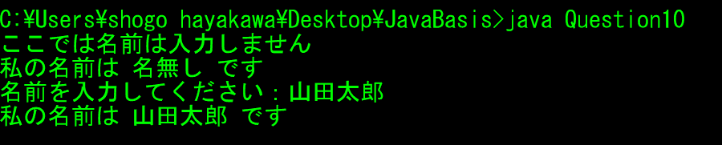
設問 11
継承
下記の親クラスをそのまま使用して下さい。
継承機能を使用して子クラスと、メインのメソッド用のクラスを作成し、
画像通りに表示してください。
class CalculateSuper {
protected int param1;
protected int param2;
protected CalculateSuper(int param1, int param2) {
this.param1 = param1;
this.param2 = param2;
}
protected void flow(){
sum();
sub();
}
protected void sum() {
System.out.println(param1 + "と" + param2 + "足すと" + (param1 + param2));
}
protected void sub() {
System.out.println(param1 + "と" + param2 + "引くと" + (param1 - param2));
}
}
子クラス：CalculateChild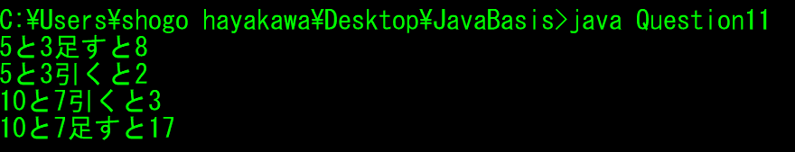
設問 12
インターフェース
設問9と同様にキーボードで整数を2つ入力し、
入力した数字の積とそれを2で割った数を求めてください。
※以下のインタフェースを実装して入力した数字の積、それを2で割る計算を行うクラスを作成してください
interface AreaCalc {
int sankaku(int a, int b);
int shikaku(int a, int b);
}
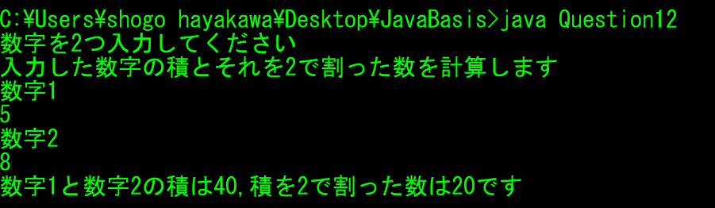
設問 13
while
入力を2回行い、1回目と2回目の文字が同じかどうか表示してください。
1回目と2回目の文字が異なる場合はもう一度入力を促してください。
1回目の文字が空文字はもう一度入力を促してください。
2回目の文字が空文字はもう一度入力を促してください。
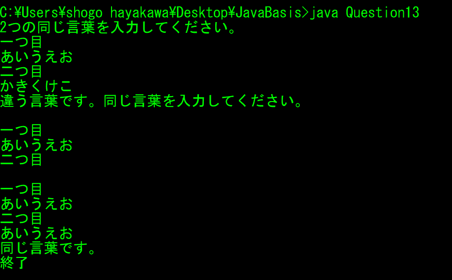
設問 14
ArrayList設定したい数だけ値を入力して、これらの平均を表示してください。
例：平均を表示したい値を入力してください。
平均を表示したい値をすべて入力したら「OK」を入力してください。